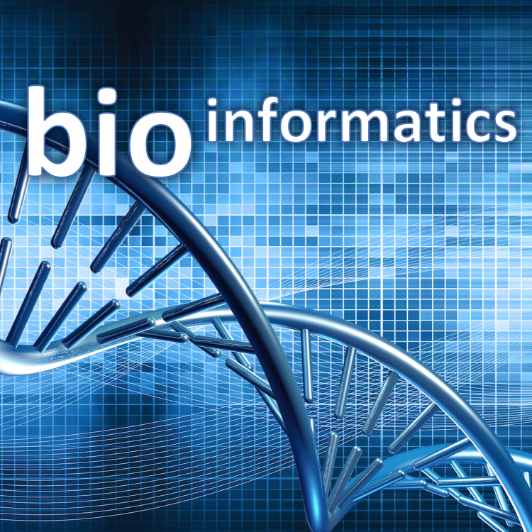
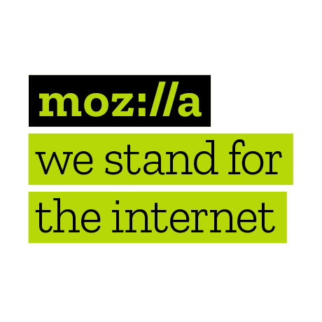
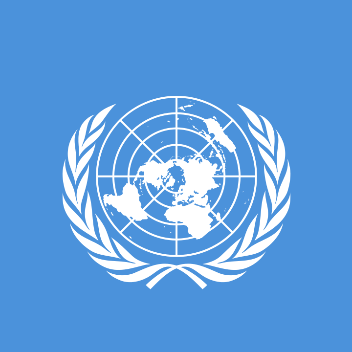
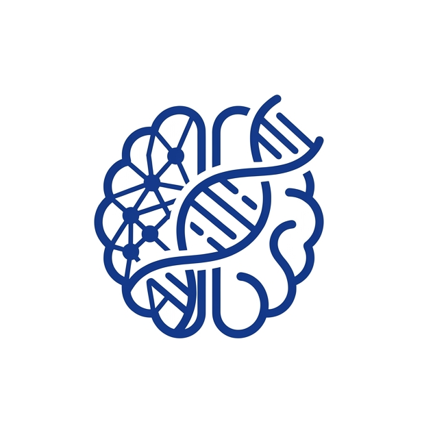
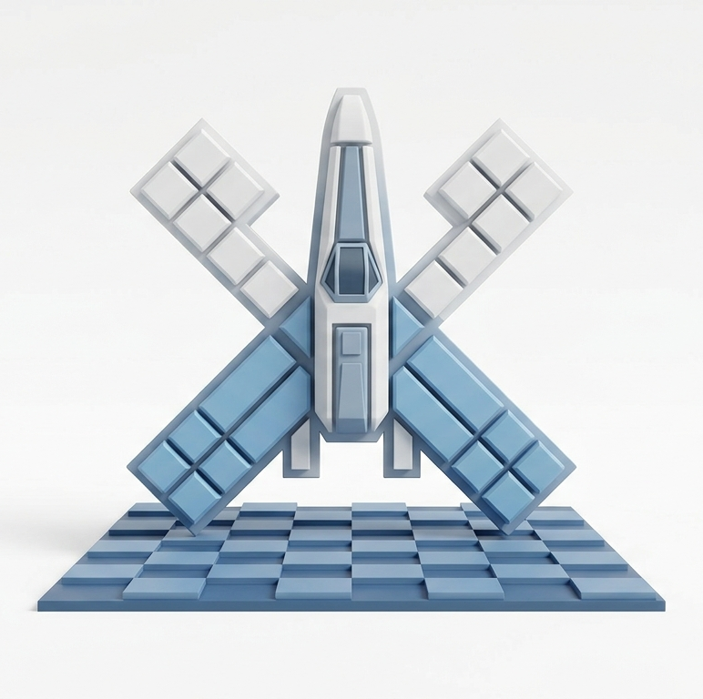

About
I lead global advocacy campaigns and communications for UNICEF, based in New York, drawing on 7+ years of advocacy, communications and digital strategy experience across the UN system. Outside work I keep a foot in bioinformatics, contribute to Ubuntu, and once organised a local Mozilla community of open-web advocates.
Experience
United Nations
-
2017 — Present
Advocacy & Communication Manager
UNICEF · New York
Builds regional and global advocacy campaigns, brand strategy and partnerships.
-
2016 — 2017
Special Assistant, Political Affairs
UN OCHA · Geneva
Supported the Assistant Secretary-General on humanitarian diplomacy and high-level partnerships.
-
2014 — 2016
Communications Specialist
UNICEF · Amman & Damascus
Ran digital communications, crisis response and spokesperson duties across the MENA region.
-
2011 — 2013
Humanitarian Affairs Officer / Consultant
UN OCHA · Libya & Syria
Humanitarian affairs and media relations in complex conflict and post-conflict settings.
Before the UN
-
2006 — 2011
Entrepreneurship & Writing
Freelance
Freelance writer for a number of publications, and founder of several companies.
MSc, Medical Biotechnologies (Tunisia, 2010) · Fluent in English, French and Arabic.
Interests

Bioinformatics
Studied biotechnology and specialised in bioinformatics, working on DNA–protein interaction prediction to help map the DNA-repair mechanism of a radio-resistant bacterium.

Mozilla
Helped grow a local community of Mozilla advocates promoting the open web, before handing it off to a strong team of volunteer contributors.
Ubuntu
Contributor since 2007 and official Ubuntu member since 2009 — free software that runs everywhere from phones to the cloud, named after the philosophy of humanity towards others.

United Nations
7+ years across UNICEF and OCHA — humanitarian advocacy and communications through assignments across Asia, Africa, Europe and North America.

AI & Machine Learning
Developed an interest in machine learning during university, working on predictive models, and have kept experimenting with it as the field has taken off since.

Game Development
A hobby since high school — building small games for fun, one that keeps evolving alongside new tools, engines and ideas over the years.
Contact
The fastest ways to reach me: